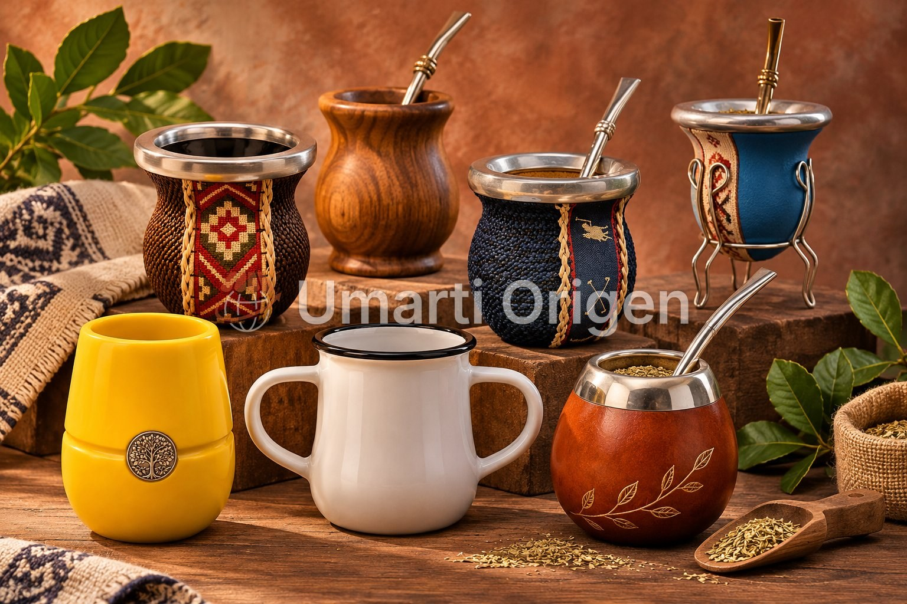
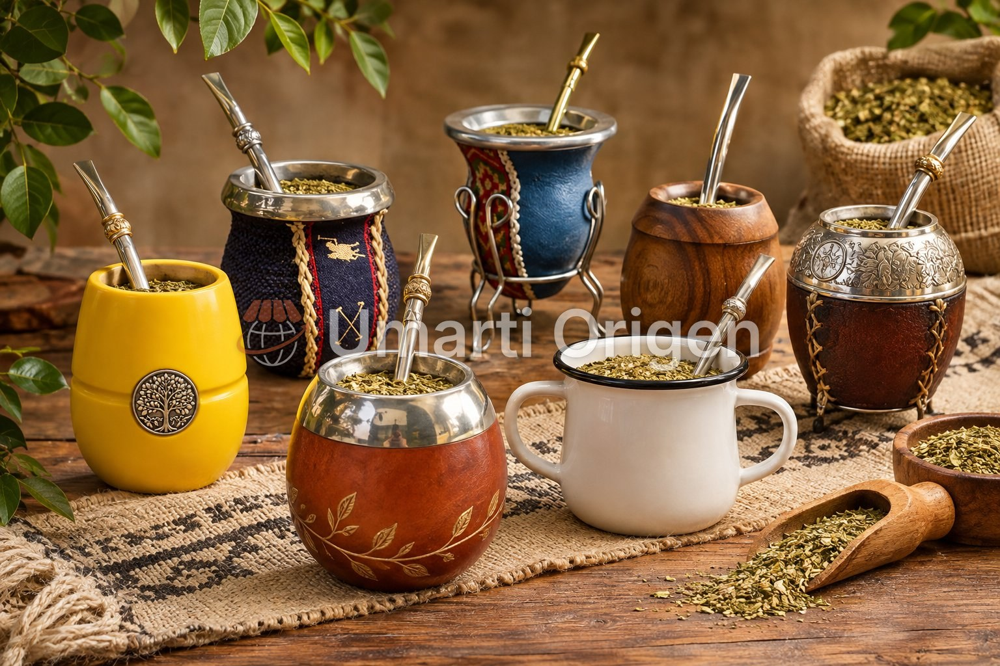

El mate es mucho más que una infusión: es una costumbre que nos acompaña en el día a día, una excusa para compartir momentos y una tradición que forma parte de nuestra identidad.
Aunque muchas veces pensamos en el mate tradicional de calabaza, existen diferentes tipos de recipientes, elaborados con distintos materiales, formas y estilos. Desde los mates más rústicos hasta los diseños modernos, cada uno tiene sus particularidades y una historia que contar.
En esta nota te invitamos a conocer algunos de los principales tipos de mate y sus características.
1. Mate de calabaza
Es uno de los mates más tradicionales y representativos de Argentina. Se elabora a partir del fruto seco de una planta de la familia de las cucurbitáceas, que se limpia y prepara para utilizarlo como recipiente.
Su forma, tamaño y terminación pueden variar considerablemente, ya que cada calabaza es diferente. Algunos conservan su aspecto natural, mientras que otros se decoran con grabados, virolas metálicas o trabajos artesanales.
El mate de calabaza requiere ciertos cuidados, especialmente durante su preparación inicial y su limpieza, para conservarlo en buenas condiciones. Te lo explicamos en cómo curar un mate de calabaza o de madera.
2. Mate de madera
Los mates de madera se elaboran a partir de diferentes especies, como algarrobo, palo santo y otras maderas utilizadas en la artesanía tradicional.
Se caracterizan por su aspecto natural, su resistencia y sus diseños, que pueden ir desde formas sencillas hasta piezas talladas y decoradas. Algunos modelos incorporan detalles metálicos o combinaciones de materiales que les dan una terminación particular.
Son una alternativa muy elegida por quienes buscan un mate con una estética rústica y artesanal. Si el tuyo es de palo santo, mirá cómo curarlo sin que se agriete.

3. Mate de vidrio
El mate de vidrio es una opción práctica y fácil de limpiar.
Su principal característica es que permite observar el interior del recipiente, lo que facilita controlar su limpieza y estado. Además, el vidrio no absorbe los sabores de la yerba, por lo que resulta una buena alternativa para quienes prefieren conservar el sabor original de la infusión.
Existen modelos con diferentes formas y terminaciones, algunos con fundas de silicona o revestimientos que ayudan a protegerlo y facilitan su manipulación.
4. Mate de cerámica
Los mates de cerámica se destacan por la variedad de colores, diseños y terminaciones que pueden ofrecer.
Pueden encontrarse en estilos tradicionales, modernos o decorativos, con superficies lisas, esmaltadas o pintadas. Al ser un material que no absorbe fácilmente los sabores, permite disfrutar de la yerba sin que el recipiente aporte otros aromas.
Es una alternativa interesante para quienes buscan un mate con un diseño particular y una limpieza sencilla.
5. Mate de metal
Los mates de metal pueden elaborarse en acero inoxidable, aluminio u otros metales.
Se caracterizan por su resistencia y durabilidad, y suelen ser una opción práctica para llevar de viaje, al trabajo o realizar actividades al aire libre. Algunos modelos tienen doble pared, lo que ayuda a conservar la temperatura exterior más agradable al tacto.
También existen diseños que combinan metal con madera, cuero u otros materiales, logrando diferentes estilos y terminaciones.
6. Mate de cuero
El cuero se utiliza principalmente como revestimiento o decoración de mates elaborados con otros materiales, como calabaza, madera o recipientes metálicos.
Los mates revestidos en cuero pueden presentar costuras, grabados y diferentes terminaciones artesanales. Su aspecto tradicional y sus detalles decorativos los convierten en una opción muy apreciada por quienes valoran la artesanía y los diseños clásicos.

7. Mate camionero
El mate camionero es uno de los diseños más reconocibles dentro de la tradición matera argentina.
Generalmente tiene una forma ancha y baja, una base estable y una boca amplia que facilita la preparación y el cebado. Puede elaborarse con calabaza, madera u otros materiales, y suele incorporar una virola metálica o detalles decorativos.
Su diseño está asociado a la tradición de compartir el mate durante los viajes y las jornadas de trabajo.
8. Mate imperial
El mate imperial se distingue por sus terminaciones artesanales y sus detalles decorativos.
Habitualmente se elabora con una calabaza seleccionada y puede incorporar virolas metálicas, trabajos en cuero y elementos ornamentales. Se caracteriza por su estética elegante y por el cuidado puesto en cada detalle de su fabricación.
Es uno de los estilos más apreciados por quienes buscan una pieza artesanal con una terminación especial.
¿Cuál es el mejor mate?
No existe un único mate ideal para todos. La elección depende de las preferencias personales, el uso que se le quiera dar y los cuidados que cada material requiere.
- Si buscás un mate tradicional, la calabaza y la madera son excelentes alternativas.
- Si preferís practicidad y facilidad de limpieza, podés optar por el vidrio, la cerámica o el acero inoxidable.
- Si te gustan los diseños artesanales, los mates revestidos en cuero o con detalles decorativos pueden ser una excelente elección.
Lo importante es encontrar ese mate que te acompañe en tus momentos cotidianos y que haga de cada cebada una experiencia especial. Y una vez que lo tengas, mirá cómo preparar un buen mate, paso a paso.
Porque el mate no es solamente una infusión: es una forma de compartir, de encontrarnos y de mantener viva una tradición que nos une.